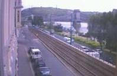

|
|
Geschichte
und Sehenswürdigkeiten um den Gellertberg |
| |
| Der
Gellertberg
im
Jahre 1900 (oben) und heute (rechts) aus etwas
größerer Entfernung von der Webkamera betrachtet.
Das Bild lässt erahnen, warum dieser Berg im Zentrum von
Budapest, ursprünglich Blocksberg hieß. Aber auch
der heute amtliche Name des Bergs hat deutschen Ursprung, wie aus der
nachfolgenden Schilderung hervorgeht. Oben am Berg steht das Bollwerk
der Besatzungsmacht Österreich, die Zitadelle. Mitte
rechts erkennt man Häuser, die schon lange nicht mehr da sind.
Das Gellert Denkmal an einem Bild unten wurde am Fuße des Gellertberges vier Jahre später, in 1904 aufgestellt und
stünde etwa im rechtlichen Drittel dieses Bildes. |
 |
| |
|
Am
Fuße des Gellertbergs erkennt man das
, das
bereits seit der Römerzeit im Betrieb ist. Das heutige
Gebäude begannen die Türken zu bauen, es wurde
später deutlich erweitert und umgebaut. Heute erinnert nur
noch eine auf neun Säulen stehende interne Kuppel im
Dampfbad an das türkische Bad. Das Rudas Heilbad wird aus
neun, bis zu 44°C warmen Thermalquellen gespeist, die aus dem
Gellertberg entspringen. |
| |
|
|
Eine
Häuserzeile am Gellertberg im 19. Jahrhundert in der
Nähe des heutigen
St. Gellert Denkmals. Die Häuser wurden auf Anordnung der
Stadtverwaltung aus dem Jahre 1878 enteignet und aus finanziellen
Gründen erst nach der Jahrhundertwende, noch vor dem Ersten
Weltkrieg
abgerissen. Dabei wurden rd. 300.000 Bäume,
überwiegend Eschen zur
Befestigung des an dieser Stelle besonders bröckeligen
Gellertberges
angepflanzt. |
Die Abtragung
der Zitadelle im Jahre
1901
Die Zitadelle wurde nach der
Niederschlagung des Ungarnaufstandes 1848-1849 durch die
Zarentruppen im Jahre 1849 auf Anordnung der Habsburger gebaut und
1851 fertiggestellt. Eine österreichische Garnison zur Bändigung
der Ungarn wurde hier stationiert. Entsprechend groß war der Hass
der Budapester Ungarn gegen die Zitadelle, weil sie darin laufend
ihre Erniedrigung vor Augen sahen. |
|
| |
Als der Bann der Österreicher gegen die
Ungarn nach dem sog. Ausgleich von 1867 vorbei war und die
Habsburger nur noch an die Machterhaltung der Familie dachten,
wurde die Zitadelle auf Beschluss der noch deutschsprachigen,
jedoch schon ungarischen Stadtverwaltung von 1897 von den
Militärmachthabern der k-k Monarchie enteignet. Es war auf Grund
des Ausgleichs von 1867 ein illegaler Akt, doch die Habsburger
waren damals schon ohne Kraft.
|
Große Teile der Zitadella wurden auf
städtische
Anordnung bis 1901 abgetragen. Dieses Bild zeigt die Abbauarbeiten an
der Zitadelle, unten links auf der östlichen Donauseite sind
die
anfänglichen Bauarbeiten an der Elisabethbrücke zu
erkennen. Bei
der Namensgeberin Elisabeth handelt es sich um die Kaiserin Elisabeth,
die nach einem Spielfilm in den 1960er Jahren im deutschsprachigen Raum
plötzlich auch in Deutschland populär wurde und
seither fälschlich, wie im Film, SissiLissi
genannt war, aber die lispelnde, von
Arroganz protzende Kunstsprache der Habsburger Familie genannt wird.
Richtig ist aber, dass sie von ihrem Mann, dem Kaiser
Franz-Josef II immer nur aus ihr Sissi gemacht hat. Hinzu
kommen die
unklaren
Schriftzüge des Kaisers, die einen Unterschied zwischen den
Großbuchstaben L und S nicht ermöglichen.
|
| |
| |
Das St. Gellért
Denkmal am
Gellertberg in der Nähe der Elisabethbrücke wurde
1904 aufgestellt und ist nur ein Teil eines gewaltigen Bauwerks aus
Treppen und Mauern, die man hier zur Befestigung des
zerklüfteten und bröckeligen Kalkgesteins erkoren
hat. Große Teile der Treppen wurden im 2. Weltkrieg
zerstört und nur zum Teil wieder aufgebaut.
|
Die
Geschichte vom Heiligen
Gellert: Der
Hl. Gerhardus war ein Mönch und Abt im Benediktinerkloster
seiner Haimatstadt San Giorgo (heute Italien). Während einer
Reise nach Israel erhielt er den päpstlichen Auftrag, an der
Christianisierung der Ungarn mitzuwirken. So reiste er nach Ungarn
weiter. Ungarn war damals auch aus dem Osten von Byzanz zum Christentum
gedrängt, so wirkte er überwiegend in der Ungarischen
Tiefebene mit. Im Hofe Stefans war er mit der Erziehung des
Königssohnes Imre bzw. Emmerich beauftragt. Seine
Missionsaufgabe erfüllte er so gut, dass er vom Papst im Jahre
1030 zum Erzbischof von Csanád ernannt wurde.
Csanád liegt etwas östlich von Szegedin im heutigen
Serbien.
|
Eine
gläubige
Rebellengruppe, die heutzutage heidnisch bezeichnet wird,
hat den Erzbischof Gellert zusammen mit seinen
Bischöfen im Jahre 1046 gefangen
genommen und sie alle getötet. Den Erzbischof haben
sie in einen
größeren Holzfass gesteckt, in den sie aus
allen Richtungen
übergroße
Nägel hämmerten. Schließlich wurde
der Erzbischof am
Kelenberg (=Gellértbeerg) von einer
Klippe abgerollt, wo seit
1904 seine Statue steht. - Ähnlich sadistisch wurden damals
die nicht
bekehrungswilligen Ungarn von den Missionaren ins Jenseits
befördert
und wurde anschließend in Csanád beigesetzt, wi
sich auch heute noch
sein Sarkophag befindet. Der Heilige Gellért wurde im Jahre
1083
zusammen mit dem Heiligen Stefan heilig gesprochen.
|
So
ließ der Heilige Stefan seinen eigenen, gegen die neue
Religion
rebellierenden Vetter Koppány, der der
rechtmäßige Stammesfürst
der Ungarn war, beim lebendigen Leibe in vier Stücke teilen
und die
Körperteile in den vier größten, nicht
bekehrungswilligen Ortschaften
des Landes auf langen Spießen obenauf als Mahnmäler
zur Schau stellen.
Seine wichtigste Tat im Sinne von Rom war jedoch die Öffnung
und
Sicherung des Pilgerweges auf dem ungarischen Gebiet in Richtung
Jerusalem. Mit
der konsequenten Durchsetzung christlicher
Ziele besorgte er päpstliche Verbündete und damit die
Fundamente für die
Staatsgründung Ungarns auf dem heutigen Landesterritorium. Er
starb 1038 und wurde an der Seite seines früh verstorbenen
Sohnes Imre
in Székesfehérvár
(Stuhlweißenburg) begraben und mit ihm zusammen im
Jahre 1083 durch den Papst Gregor VII. heiliggesprochen.
|
|
|
Abendlicher
Blick von der Zitadella auf den Burgpalast, im Hintergrund
steht die Matthiaskirche, dahinter sieht man die Lichter des
Rosenhügels. |
Die
Zitadelle ist heute 230
Meter lang und 40-60 Meter breit. Die Höhe des Mauerwerks
beträgt 12-16 Meter. Die Mauer ist an manchen Stellen auch
heute noch 9 Meter stark.
Seit
der
Sowjetbesetzung von Budapest im Jahre 1945 diente die Zitadelle erneut
als ausländisches Bollwerk gegen die Bevölkerung.
Einerseits wurde hier ein militärbetontes Sowjetdenkmal unter
ein Friedensengel gesetzt, für alle sichtbar, wer hier das
Sagen hat, andererseits diente die Zitadelle erneut
militärischen Zwecken, bis zur politischen Wende im Jahre
1989. Die Statuen der Sowjetsoldaten sind heute im Denkmalpark zu
sehen. Heute beherbergt die
ausgeputzte Zitadelle einen Gaststättenbetrieb mit Weinkeller
und ist schon lange ein vornehmes Ausflugsziel der Budapester
Bevölkerung. Im Restaurant der Zitadelle spielt die
Musikkapelle Benedek Csík. Eine Kostprobe aus dem
Repertoire
dieser
vierköpfigen Zigeunerorchester können Sie
demnächst hier
hören (MP3-Format, 3,5 MB download). Der Primasch spielt das
Tschardasch vom Komponisten Monti. |
|
|
|
Den besten, besonders
beeindruckenden und prägenden Panoramablick über
Budapest (Bild links) hat man vom Fuße der Zitadelle, viel
besseren als vom Burgberg. Bei schönem Wetter
sieht man von
hier weit über die Stadtgrenzen hinaus. Ein riesiges
Feuerwerkspektakel findet hier alljährlich am 20.
August
(Tag der Staatsgründung, zugleich der Geburtstag des
Hl.
Stefans und
daher der Namenstag Stefan, nach dem
ersten gekrönten Oberhaupt der
Ungarn) und zu besonderen Anlässen statt. |
|
|
Der
Gellertberg aus dem
Süden.
Im Hintergrund sind der königliche Burgpalast und die
Matthiaskirche zu erkennen. Der Gellertberg erstreckt sich am
westlichen Donauufer zwischen den Franz-Josef (benannt nach dem
Spender, dem Kaiser, heute: "Szabadság" Brücke) und
Elisabeth Brücken (benannt nach der Spenderin Sissi). |
|
|
Eine ähnliche Perspektive aus dem Jahr
1821 zeigt etwas mehr von den Bergen im Stadtteil Buda -
Steindruck der Künstler Jakob Alt und Adolph Kunike. Das Bild
zeigt die Ankunft eines Viehtransports am Schlachthof. Im 9.
Stadtbezirk (heute Ferencváros, bis zum ersten Weltkrieg von
Bevölkerung her beinahe 100%ig deutschsprachige Franzstadt, in
Anlehnung an die Wiener Bezirksbezeichnung) befand sich seit 1740
der zentrale Schlachthof von Budapest. |
Der Zentrale Schlachthof gehörte bis zur
Verstaatlichung im Jahre 1945 den Herz-Brüdern, die ja durch ihre
Herzsalami - auch Wintersalami genannt - berühmt geworden sind.
Die Salamifabrik gehört heute zur Fa. Pick aus Szegedin.
Neulich von der Provinzkonkurrenz aufgekauft und im Handel
durch neue Geschmacksvarianten
in die Bedeutungslosigkeit getrieben, findet man Herzsalami in den
Verkaufsregalen heute nur noch selten . |
|
|
Die Elisabethbrücke
ist heute 290 Meter lang. Sie
wurde nach den Plänen von Aurelius Czekelius von 1897 bis 1903
gebaut und galt lange Zeit weltweit als die längste
Hängebrücke mit einer einzigen Spannweite zwischen
ihren Stützpfeilern. Sie galt als technisches Vorbild
für die erst 1926 gebaute Golden Gate Bridge in San Francisco.
- Die alte Elisabethbrücke wurde 1945 vollkommen
zerstört und erst 1964 wieder aufgebaut. Die beiden Pfeiler
der ursprünglichen Brücke standen etwa 50m entfernt
vom Donauufer. |
|
| |
| |
Ungarn-Tourist Team

|
 |
|